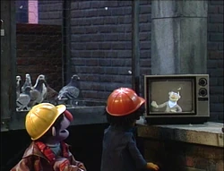

Según la AMBBA (Asociación Minera Bohemia Brillante Adyacente), el pasado 28 de junio se descubre un nuevo mineral en una de las sesiones de extracción de recursos por parte de nuestro equipo. La luminiscencia de la abbynita es de un rojo a tonos verdosos incluso.
¿Y cómo no? Hemos hablado con nuestros mineros. Aquí nuestro diálogo otorgado por Maribel María, encargada de la entrevista con nuestros valientes mineros. El sujeto con el que tenemos el privilegio de conversar se llama Mario Flores, Líder de Operaciones de la AMBBA. ¡Saludos, Mario!
M: Algo definitivamente de otro mundo. Estábamos de rutina explorando hasta que encontramos algo que nuestra maquinaría no podía sobrepasar. Estuvimos estupefactos al inicio porque nos habían renovado la mayoría de nuestras herramientas de trabajo el mes pasado y todo estaba en excelentes condiciones para trabajar, hasta que vimos que era algo fuera de rutina.
Cuando originalmente estábamos en nuestros minerales rutinarios: cobre, hierro, oro, diamante, encontramos algo rojo, hermoso, desconocido, y fuera de manual. Decidimos detener toda operación para empezar a investigar lo que empezamos a suponer que era un mineral que no esperábamos ver, pero resultó ser algo jamás visto y conocido.
Gracias a Dios Su Majestad, pudimos ser los primeros y hemos llamado este mineral la Abbynita, en honor a Su Majestad.
MM: Hermosas palabras, Mario. Desde The Abby Times, apreciamos tu tiempo y narración maravillosa de este suceso. Esperamos saber más de este interesantísimo material.